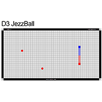

Framing the Battle
The terms and categories of competition, as well as the judging criteria and further explanation.
Click to see moreFrom the outset, there are some clear conceptual problems in holding a theoretical battle between jQuery and HTML5.
-
- jQuery (and JavaScript in general) does absolutly nothing on the client side without HTML content
- HTML is assembled by a browser in a Document Object Model, based on JavaScript, for display
Thus, HTML and JavaScript can be said, on the client side at least, to be dependencies of one another
-
- HTML5, being nothing more than semantic markup, can't be expected to compete visually or dynamically with JavaScript.
- Afterall the HTML5 spec was designed, in part, to prevent the bad habits of using markup for visual formatting
-
- jQuery is nothing more than a library of methods, wrapped in a jQuery object, so without it's close partner JavaScript, it can't even exist
- In a less crucial problem, jQuery must be called via a <script> tag, which is technically markup, as jQuery syntax is not native to any client
Now we see why jQuery and HTML5 both require a team environment, to make the comparison realistic, and the competition possible
The fieldset of battle:
- Animation & Visual Effects
- Interactivity
- Cool Toys & Games
- Data Visualization
The teams
Who the teams are, what makes each member tick & why jQuery and HTML5 aren't competing directly.
Click to see moreCamp HTML5
-
HTML5
The markup language that propelled out tiny little planet out of the dark ages
- Simple, functional, semantic...
- Elements are assembled into the DOM as nodes that can be interacted with like any other object
- Modern browser support for sites and applications that include a vast array of new API's, techniques, and features
- Best of all, no more stupid 5000 character doctype declarations!
-
CSS3
The rockstar of modern web standard specs
- Sports a host of new intuitive selectors like specialized sibling and attribute specific selectors as well as reverse child (parent) selection
- Pseudo classes that can add content and further specify or exclude selectors, even apply to subsets of an element like :first-line
- Standardization of properties and values, as well as a slew of new useful values for each properties
- An incredibly powerful animation and transform engine plus improved and new static graphic styles like gradients and multiple backgrounds that can augment the appearance of any element
- calc()... Need I say more?
-
HTML5 canvas
On the fly, pure scripted, pixel based graphics
- Based on pixels and manipulating them, making it ideal for more realistic games
- Doesn't rely on external files, canvas graphics are generated by scripts in real time
- Takes full advantage of hardware acceleration for load intensive logic based on interactivity
- Canvas is lightning fast at rendering, and has potential for digital animation and cartooning to even light CGI movies
- Has a promising 3d spec that, once matured, may lead to the most advanced generation of web based games yet
-
SVG
Vector graphic image objects in browser
- Being vector based, SVG is well suited to complex line and fill scenarios like infographics or even CAD applications
- Handles lots and lots of objects very well, and each SVG element physically exists in the DOM, making it more accessible to general frontend practices
- Works with standard image functionalities for general vector image display in sites and applications
- Being scalable makes it ideal for responsive design


jQuery Alliance
-
jQuery Library
The most refined and ubiquitous JavaScript library on planet earth
- Simplified syntax and selector format for ease of use
- Makes frustrating and repetitive processes a snap
- Built in data handling, animation, and DOM manipulation methods
- Place nicely with standard JavaScript logic
-
JavaScript
The original dynamic front end logic programming language
- Native to all browsers desktop and mobile
- Widely supported ECMAscript core
- Object oriented yet light with a fairly simple and logical syntax
- Ability to interact directly with DOM in it's own language
-
jQuery UI
jQuery's User Interface add-on library
- Comes bootstrapped with some of the most common widgets and components
- Modular, easily prototyped, highly customizable
- Most components are as simple to use as declaring and then calling a function
- Works naturally with jQuery methods and sports built in options galore
-
D3.js
JavaScript based data driven graphics rendering engine
- Compiles to SVG graphics accessible via the DOM
- Build it once then sort, manipulate, or add data as needed
- Robust in both data handling and graphic rendering aspects
- Unparalleled flexibility for front end data visualization applications


The Showdown
The Challengers
Animation & Visual Effects
HTML5
jQuery
Interactivity
HTML5

jQuery
Cool Toys & Games
HTML5
jQuery
Data Visualization
HTML5